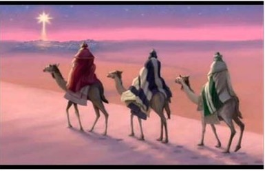

In a story apparently intended to show the universality of Jesus’ message, Zoroastrian magi (wise men) (not kings, not three) are led by a star not to the baby Jesus, but to Herod’s palace, where they have to ask directions?! Why would the story-teller want the wise men to go to Herod’s palace? Simply in order to condemn the chief priests and scribes. Furthermore, Jesus does not fulfill the included prophecy because he is never ‘governor ruling Israel.’ Also, here Joseph and Mary live in a house in Bethlehem (no manger), whereas in Luke, they live in Nazareth (in Galilee, outside the range of the “census” of Quirinius) and are forced to go to their ancestral home (not required) by the census (actually a land assessment made in 6 CE) conducted by the newly appointed Imperial Legate, Quirinius, supposedly during the reign of Herod the Great (who had died ten years earlier, in 4 BCE).
Mt 2:1 Now when Jesus was born in Bethlehem of Judaea in the days of Herod the king, behold, there came wise men from the east to Jerusalem, 2:2 Saying, Where is he that is born King of the Jews? For we have seen his star in the east, and are come to worship him. 2:3 When Herod the king had heard these things, he was troubled, and all Jerusalem with him. 2:4 And when he had gathered all the chief priests and scribes of the people together, he demanded of them where Christ should be born. 2:5 And they said unto him, In Bethlehem of Judaea: for thus it is written by the prophet,
2:6 And thou Bethlehem, in the land of Juda, art not the least among the princes of Juda: for out of thee shall come a Governor, that shall rule my people Israel. (Mic 5:2)
2:7 Then Herod, when he had privily called the wise men, enquired of them diligently what time the star appeared. 2:8 And he sent them to Bethlehem, and said, Go and search diligently for the young child; and when ye have found him, bring me word again, that I may come and worship him also. 2:9 When they had heard the king, they departed; and, lo, the star, which they saw in the east, went before them, till it came and stood over where the young child was. 2:10 When they saw the star, they rejoiced with exceeding great joy. 2:11 And when they were come into the house, they saw the young child with Mary his mother, and fell down, and worshipped him: and when they had opened their treasures, they presented unto him gifts; gold, and frankincense and myrrh.
~~~~~~~